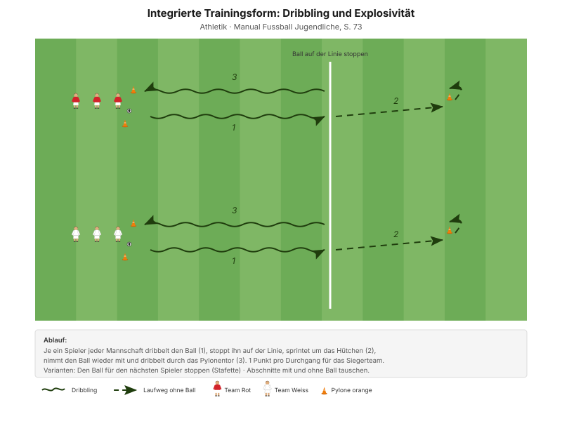
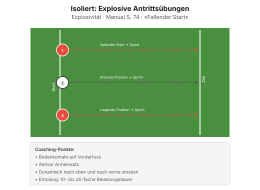

Schnelligkeit im Fussball heisst nicht 100-Meter-Zeit. Es heisst: die ersten fünf Meter – und der Moment davor, in dem man erkennt, dass es jetzt losgeht.
"Explosiv und dynamisch agieren" Erscheinungsform A1, Manual Fussball Jugendliche, S. 72
Der häufigste Fehler bei Schnelligkeitstraining ist zu wenig Pause. Wer die Erholung kürzt, trainiert Ermüdungsresistenz – auch wertvoll, aber heute nicht das Thema. Die Pausen stehen bei jeder Form dabei und sind einzuhalten, auch wenn die Junioren drängen.
| Zeit | Min | Teil | Inhalt |
|---|---|---|---|
| 0–4 | 4 | Besammlung | Thema ansagen, Gruppen einteilen |
| 4–16 | 12 | E1 | Aus den Zonen dribbeln · Big 4 zwischen den Wiederholungen |
| 16–22 | 6 | E2 | 4 gegen 4 mit Dribbelzonen |
| 22–30 | 8 | E3 | Dribbling und Sprint (Explosivität) |
| 30–45 | 15 | H1 | Explosive Antrittsübungen · isoliert |
| 45–48 | 3 | Pause | Trinken, Umbau |
| 48–70 | 22 | H2 | Laufduelle mit Ball · integriert |
| 70–82 | 12 | Abschluss | Freies Spiel 5 gegen 5 plus 2 Torhüter |
| 82–90 | 8 | Ausklang | Cool-down, zwei Entwicklungsfragen, Verabschiedung |
| Total | 90 |
Einstieg 26 · Hauptteil 37 · Abschluss 20 Min. – nach dem Trainingsschema des Manuals (S. 43).
Nur einmal umbauen: Das Zonenfeld des Einstiegs bleibt bis zur Pause. Die Bahnen für H1 und H2 liegen daneben und werden nur einmal gesteckt.
Eigene Skizze · Platzaufteilung
Nur einmal aufbauen – das Einstiegsfeld liegt im späteren Spielfeld.
"Leg genügend Bälle bereit, damit keine Pausen entstehen." Manual Fussball Jugendliche, S. 77
12 Minuten · 30 × 22 m · alle 12 Spieler
Eigene Skizze · Aus den Zonen dribbeln
3 Wiederholungen à 1'30''–2' – zwischen den Wiederholungen je zwei Präventionsübungen.
"1. Ballkontakt in den freien Raum mit einer engen, rhythmischen Ballführung" SFV-Lernbaustein "Einstieg TE: Dribbling 01", Phase 1
Heute besonders wichtig: Das Aufwärmen muss vollständig sein, bevor explosiv gearbeitet wird. Lieber eine Minute länger als eine Zerrung.
Je zwei Übungen zwischen den Wiederholungen, 25 Sekunden pro Übung:
| Bereich | Übung | Worauf achten |
|---|---|---|
| Fussgelenk | Alphabet balancieren | Das Knie knickt weder nach innen noch nach aussen und beugt sich nicht über die Fussspitze hinaus. |
| Knie | Dynamische Ausfallschritte | Das Knie knickt nicht ein und bildet einen rechten Winkel. |
| Hüfte | Mobilität in tiefer Position | Die Fersen bleiben in Kontakt mit dem Boden, der Blick ist nach vorne gerichtet. |
| Hamstrings | Dynamische Standwaage | Standbein leicht gebeugt, anderes Bein und Oberkörper waagerecht. |
"Arbeit mit Zeitvorgaben – nicht mit Anzahl Wiederholungen." Prinzip Körperstabilität, Manual Fussball Jugendliche, S. 75
Zwei Punkte pro Übung nennen, nicht mehr. Qualität vor Tempo.
6 Minuten · gleiches Feld · 3 Wiederholungen à 1'30''–2'
"1. Ballkontakt in den freien Raum mit einer engen, rhythmischen Ballführung" SFV-Lernbaustein "Einstieg TE: Dribbling 01", Phase 2
8 Minuten · 2 Bahnen · zwei Teams im Wettkampf
Manual-Vorlage · Diagramm 44 "Dribbling und Explosivität" (S. 73)

| Parameter | Vorgabe |
|---|---|
| Distanz | 15–30 m |
| Wiederholungen | 3 |
| Pause zwischen Wiederholungen | 1/15 (Belastung × 15) |
| Serien | 3 |
| Pause zwischen Serien | 1'30''–2' |
"Erholungszeit: 10- bis 20-fache Dauer der Belastungszeit, abhängig von der Laufdistanz. Vollständig erholen zwischen den Wiederholungen." Prinzipien Explosivität, Manual Fussball Jugendliche, S. 72
15 Minuten · 3 Bahnen · alle 12 Spieler
Manual-Vorlage · Diagramm 47 "Explosive Antrittsübungen" (S. 74)

Isolierte Trainingsform – hier geht es nur um die Technik des Startens.
Das Manual zeigt die Übung nach einem "fallenden Start": Der Körper kippt aus dem Stand nach vorne, im letzten Moment setzt der erste Schritt.
"Beobachte das Geschehen und treibe die Spieler/innen an. Achte auf eine effiziente Organisation." Coachingpunkte Explosivität, Manual Fussball Jugendliche, S. 72
22 Minuten · 2 Bahnen · zwei Teams im Wettkampf
Manual-Vorlage · Diagramm 45 "Sprint und Pass" (S. 73)

Erste der beiden integrierten Formen – Schnelligkeit mit Ball.
Manual-Vorlage · Diagramm 46 "Sprint und Dribbling" (S. 73)

Zweite Form – nach 10 Minuten wechseln.
Isolierte Antritte machen schnell, aber nicht fussballschnell. Die integrierten Trainingsformen des Manuals verbinden den Sprint mit Ball und Gegner – und erst dort entscheidet sich, ob die Schnelligkeit im Spiel ankommt.
| Parameter | Vorgabe |
|---|---|
| Distanz | 15–30 m |
| Wiederholungen | 3 |
| Pause zwischen Wiederholungen | 1/15 (Belastung × 15) |
| Serien | 3 |
| Pause zwischen Serien | 1'30''–2' |
12 Minuten · gleiches Feld, kein Umbau
Keine Auflagen, keine Bonusregeln. Hier wird sichtbar, was von den 70 Minuten davor hängen geblieben ist.
8 Minuten · Cool-down im Gehen, dann Kreis in der Mitte
Zuerst 3–4 Minuten lockeres Auslaufen und Mobilität, dann der Kreis. Zwei Fragen – die Antworten kommen von den Spielern, nicht vom Trainer:
"Gelingt es dir, die Konzentration lange aufrecht zu erhalten? Was lenkt dich ab? Worauf kannst du dich fokussieren?"
"Hast du bis zum Schluss alles gegeben?" Entwicklungsfragen, Manual Fussball Jugendliche, S. 82 und 81
Material aufräumen – laut Teamregel Respekt Teamarbeit, nicht Strafe.
| Teil | Vorlage | Seite |
|---|---|---|
| E1 – E3 | SFV-Lernbaustein "Einstieg TE: Dribbling 01", Phasen 1–3 | – |
| E3 | Integrierte Trainingsform "Dribbling und Explosivität" (Diagramm 44) | 73 |
| H1 | Isolierte Trainingsform "Explosive Antrittsübungen" (Diagramm 47) | 74 |
| H2 | Integrierte Trainingsformen "Sprint und Pass", "Sprint und Dribbling" (Diagramme 45, 46) | 73 |
| Ziele, Prinzipien, Coaching | Explosivität | 72 |
| Körperstabilität | Athletik und Gesundheit | 75 |
| Trainingsaufbau | Trainingsschema (Abb. 19) | 43–45 |
Alle Seitenangaben beziehen sich auf das J+S Manual Fussball Jugendliche (BASPO/SFV, 2022). Spielerzahlen und Feldmasse sind auf einen Kader von 12 Spielern angepasst. Dieser Trainingsplan wurde mit Unterstützung von KI (Claude, Anthropic) erstellt.